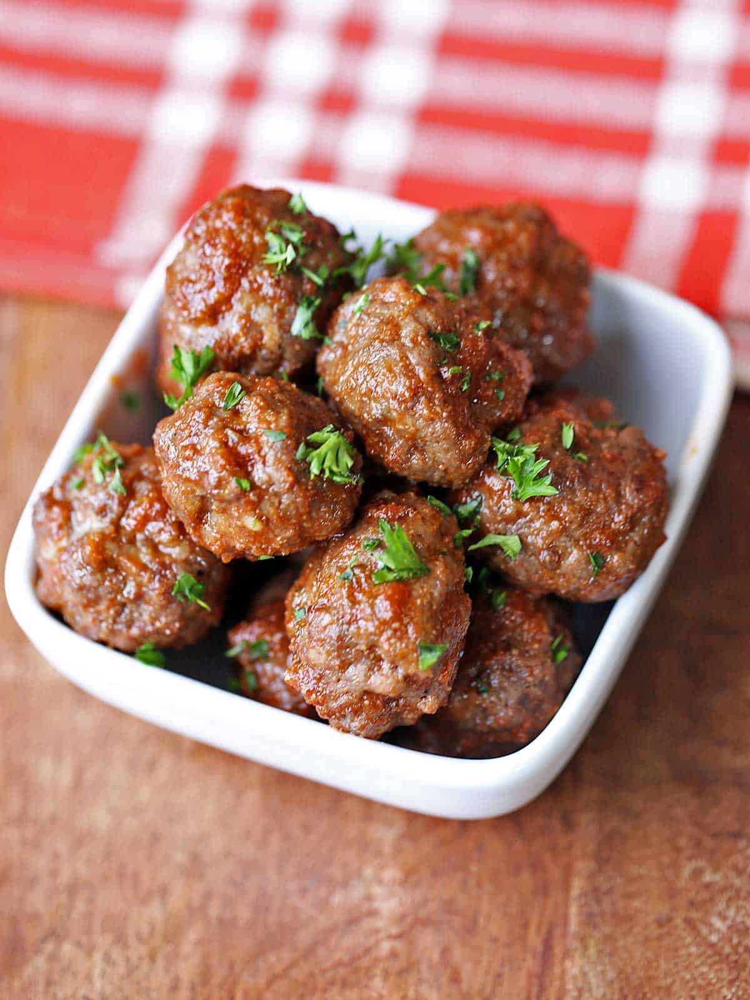

Meatballs

Description
These juicy baked meatballs are ready fast.
Made without breadcrumbs, they are low-carb and gluten-free.
Prep Time: 20 minutes | Cook Time: 15 minutes |
Total time: 35 minutes | Servings: 4 Servings
Ingredients
Meatballs
- 1 pound ground beef 85% lean
- 1 teaspoon kosher salt
- 1/4 teaspoon black pepper
- 1 teaspoon onion powder
- 1 teaspoon garlic powder
- 1/4 cup parmesan cheese dry-grated
Sauce
- 2 tablespoons unsweetened ketchup
- 1 tablespoon maple syrup
- 1 tablespoon soy sauce
- 1 teaspoon garlic powder
- 1/4 teaspoon cayenne pepper
Steps
- Preheat the oven to 400°F. Line a large, rimmed
baking sheet with high-heat-resistant parchment paper.
- In a medium bowl, use your hands to mix together the
meatball ingredients: ground beef, kosher salt, black
pepper, onion powder, garlic powder, and parmesan.
- Form the mixture into 20 meatballs. It's easiest to shape
the mixture into a log, slice it into five slices, then
divide each slice into four parts and shape those into meatballs.
- Place the meatballs on the prepared baking sheet, not touching
each other. Bake them until they are cooked through, about 15 minutes.
- Meanwhile, in a medium saucepan, whisk together the sauce ingredients:
ketchup, maple syrup, soy sauce, garlic powder, and cayenne pepper.
- Five minutes before the meatballs should be done, heat the sauce
gently over medium-low heat. If it seems too thick, add a tablespoon
or two of water.
- When the meatballs are done baking, use tongs to transfer them to the
sauce. Gently toss to coat. Serve immediately.